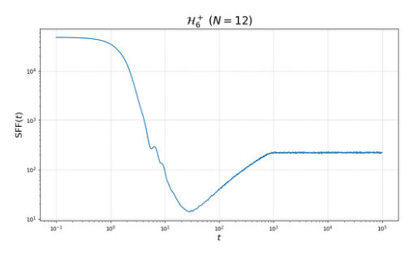
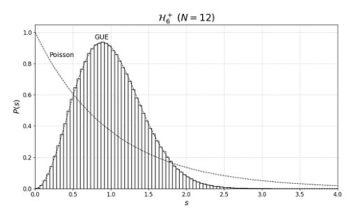
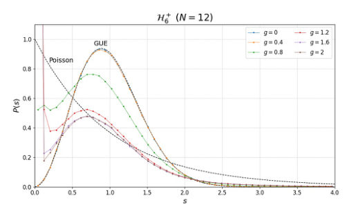
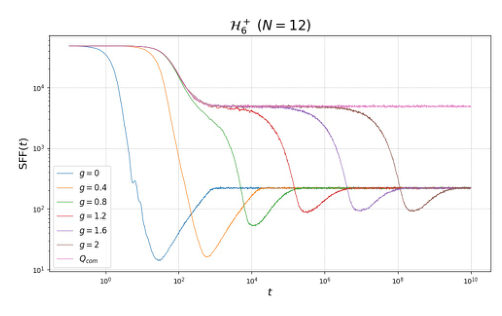
← Index · ← Previous · Next →
Authors: Alessandro Bruno, Patrick P. Potts, Alexander Grimm, Matteo Brunelli
Type: theory · Category: quantum information and computing · PDF: https://arxiv.org/pdf/2605.21036v1
Analysis basis: full PDF text, analyzed in chunks
Topic relevance: driven-dissipative phase transition 3/5 · Keldysh / 2PI / non-Gaussian methods 2/5 · entanglement & information structure 2/5 · methods for driven-dissipative 2/5 · non-equilibrium dynamics 2/5
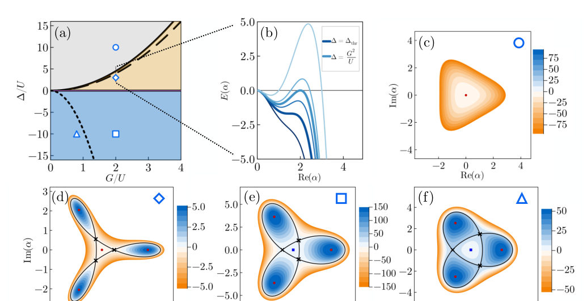
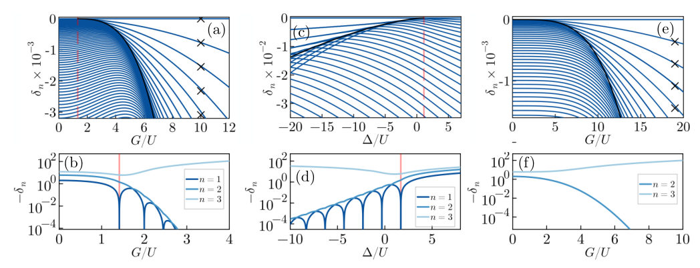
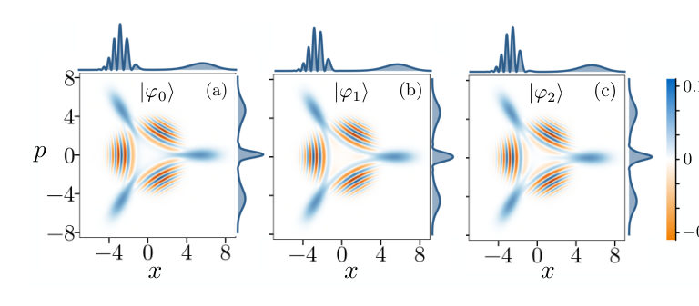
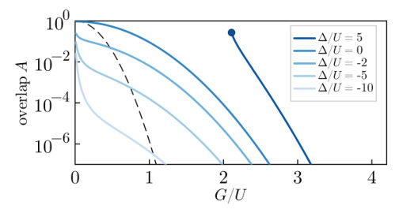
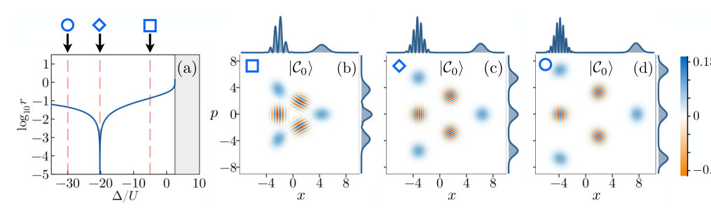
Summary. This paper explores the quantum dynamics of a three-photon Kerr parametric oscillator, characterizing its unique three-legged squeezed cat states. It demonstrates that these states can form a robust qutrit manifold protected against phase-flip errors. The study also shows how tuning the detuning allows for control over quantum squeezing and anti-squeezing.
Why it may be interesting. It provides a theoretical framework for higher-order parametric oscillators to create multi-component cat states, offering a path toward hardware-efficient, noise-biased qutrit encoding in superconducting circuits.
Main problem. The study investigates the quantum properties, stability, and energy spectrum of a three-photon Kerr parametric oscillator (3KPO) to determine its potential for encoding protected quantum information.
Main result. The authors identify a ground-state manifold of three-legged squeezed cat states and demonstrate that the 3KPO can encode a Kerr-cat qutrit protected against phase-flip errors with a natural noise bias.
Method. The researchers use semiclassical analysis of a meta-potential, exact analytical solutions at specific detuning points, and numerical simulations of the master equation including single-photon loss.
Model / system. A single bosonic mode (Kerr oscillator) subject to a three-photon parametric drive, described by a Hamiltonian with Kerr nonlinearity (U), pump strength (G), and detuning (Delta).
Key observables. Energy spectrum, Wigner functions, squeezing parameter, displacement amplitude, and population dynamics under dissipation.
Important parameters / regimes. Three-photon pump strength (G), Kerr nonlinearity (U), pump-cavity detuning (Delta), and single-photon loss rate (kappa).
Assumptions / limitations. The analysis relies on the large-pump limit for certain approximations and assumes the system can be modeled via a master equation with specific dissipation channels.
Figures summary. Figure 1 shows the phase diagram and meta-potential stability; Figure 2 displays the energy spectrum and level crossings; Figure 3 presents Wigner functions for the ground state manifold; Figure 4 shows overlap dynamics; Figure 5 illustrates squeezing transitions; Figure 9 shows population evolution under loss; Figure 10 shows exact wavefunctions.
Paper structure. The paper begins with the identification of the 3KPO Hamiltonian and phase diagram, moves to the derivation of exact and approximate ground-state solutions, analyzes the energy spectrum and squeezing dynamics, and concludes with an investigation of stability and decoherence under dissipation for qutrit encoding.
We investigate the quantum properties of a nonlinear Kerr oscillator driven by a three-photon pump. We derive both exact and approximate analytical expressions for the ground state of this interacting model. The exact solution arises at an exact spectral degeneracy, while the approximate solution describes regimes of quasi-degeneracy of the energy spectrum. In both cases, the threefold (quasi)degenerate ground-state manifold consists of quantum superpositions of three macroscopically distinct states. These states differ qualitatively from conventional three-component Schrödinger's cat states due to the presence of squeezing with a distinctive parametric dependence. By varying the detuning between the oscillator and the three-photon pump, we show that the squeezing can be enhanced, suppressed, or even reversed, leading to a squeezing-to-anti-squeezing transition. We analyze the generation and stabilization of these superposition states, their robustness against perturbations and analytically quantify the leakage to excited states. Our analysis elucidates how the three-photon Kerr parametric oscillator can be used to encode a Kerr-cat qutrit protected against phase-flip errors.
Authors: Yujia Shi, Thomas G. Wong
Type: theory · Category: quantum information and computing · PDF: https://arxiv.org/pdf/2605.20464v1
Analysis basis: full PDF text, analyzed in chunks
Topic relevance: non-equilibrium dynamics 3/5 · analog quantum simulation 2/5 · entanglement & information structure 2/5 · scars & prethermalization 2/5
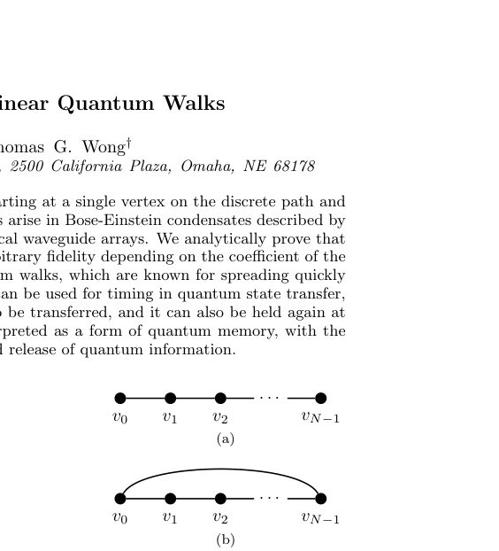
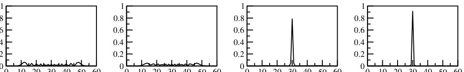
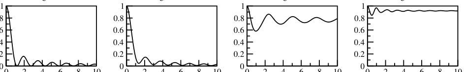
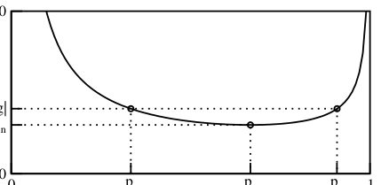
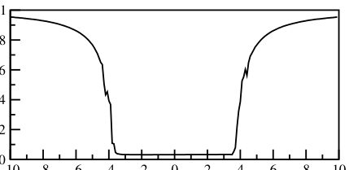
Summary. This paper demonstrates that cubic nonlinearity in 1D quantum walks can induce self-trapping, preventing the rapid spreading typical of linear walks. By analytically bounding the nonlinearity required for this effect, the authors show how this mechanism can be used to implement quantum memory and precisely time quantum state transfers.
Why it may be interesting. It provides a theoretical framework for using nonlinearity to control quantum information, specifically proposing a way to 'trap' and 'release' qubits, which is highly relevant to quantum state transfer and memory protocols in quantum optics and many-body dynamics.
Main problem. The paper investigates the phenomenon of self-trapping in one-dimensional continuous-time nonlinear quantum walks and seeks to analytically determine the conditions for localization.
Main result. The authors analytically prove that sufficiently large cubic nonlinearity can trap a quantum walker at a single vertex, providing specific lower bounds for the nonlinearity coefficient g, and propose this as a mechanism for quantum memory and controlled state transfer.
Method. The study uses numerical simulations to observe probability distributions and an analytical approach involving energy conservation, the Cauchy-Schwarz inequality, and spectral norm bounds to derive trapping conditions.
Model / system. The model consists of a continuous-time quantum walk on 1D path and cycle graphs governed by a cubic nonlinear Schrödinger-type equation (Gross-Pitaevskii-like) with a Hamiltonian proportional to the negative adjacency matrix.
Key observables. Probability distribution at vertices, time-averaged probability at the initial vertex, and the nonlinearity coefficient g.
Important parameters / regimes. Nonlinearity strength g, lattice size N, vertex degree, and the transition from the linear regime (rapid spreading) to the nonlinear regime (self-trapping).
Assumptions / limitations. The derivation assumes the walker is not strictly localized or entirely removed (0 < p < 1) and relies on the spectral norm of the remaining adjacency matrix being at most 2.
Figures summary. Fig 1 shows the graph structures; Fig 2 demonstrates the transition from spreading to trapping in a path graph at different g values; Fig 3 plots the probability at the middle vertex over time.
Paper structure. The paper introduces the nonlinear model and its physical relevance, presents numerical evidence of self-trapping, provides an analytical derivation of the trapping bounds using energy conservation, and concludes with applications to quantum memory and state transfer.
We explore a continuous-time quantum walk starting at a single vertex on the discrete path and cycle with a cubic nonlinearity. Such nonlinearities arise in Bose-Einstein condensates described by the Gross-Pitaevskii equation or by nonlinear optical waveguide arrays. We analytically prove that the nonlinear quantum walk can be trapped to arbitrary fidelity depending on the coefficient of the nonlinear term. This contrasts with linear quantum walks, which are known for spreading quickly in one dimension. We propose that this trapping can be used for timing in quantum state transfer, where a qubit is held at a node until it is ready to be transferred, and it can also be held again at the receiving node. This scheme can also be interpreted as a form of quantum memory, with the trap and transfer corresponding to the storage and release of quantum information.
Authors: Y. -D. Liu, X. Xu, Q. -R. Wang, D. -S. Wang
Type: theory · Category: quantum information and computing · PDF: https://arxiv.org/pdf/2605.21045v1
Analysis basis: full PDF text, analyzed in chunks
Topic relevance: entanglement & information structure 3/5 · exotic spin models in light-matter 2/5 · measurement-induced transitions 2/5 · quantum measurements 2/5
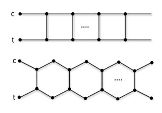
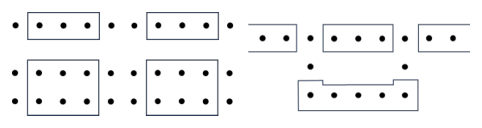
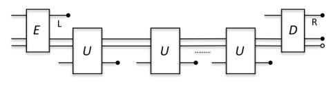
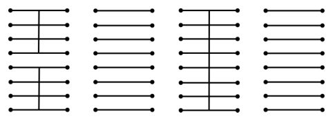
Summary. The paper proposes a new quantum computing architecture called 'telesistors' that uses the intrinsic properties of symmetry-protected topological phases to implement protected quantum gates. By treating gates as physical components rather than just sequences of operations, this model offers improved modularity and integration. It provides a foundation for scalable, fault-tolerant quantum computing with reduced overhead.
Why it may be interesting. It bridges many-body physics and quantum computing by showing how topological properties of condensed matter phases (SPT/TOP order) can be directly leveraged as hardware-level protection for quantum gates.
Main problem. Developing a universal quantum computing architecture that moves beyond standard qubit-based circuits by using a 'transistor-like' structure to store and execute quantum gates.
Main result. The authors propose 'telesistors' (teleportation-based quantum transistors) based on Symmetry-Protected Topological (SPT) order that provide high-fidelity Clifford gates with intrinsic physical protection and low overhead.
Method. The framework utilizes Matrix Product States (MPS), gate teleportation via measurement-induced processes, and the Choi state representation to implement a universal gate set (H, S, T, CZ).
Model / system. The architecture is based on SPT phases, specifically 1D and 2D cluster states, 1D Haldane phases, and 2D valence-bond solids, with quantum dots acting as junctions for edge modes.
Key observables. String order parameters, stabilizers, and gate fidelity/infidelity.
Important parameters / regimes. Z2 x Z2 symmetry, symmetry-breaking perturbation parameter (lambda), and the relationship between lattice width and length.
Assumptions / limitations. Edge ports are treated as zero-dimensional quantum dots; the T gate is not fully protected by symmetry; and the system requires precise control over the gate Hamiltonian.
Figures summary. Figure 1 shows a quantum transistor in MPS representation; Figure 2 illustrates two-leg ladder geometries (square and honeycomb) for CZ gates; Figure 3 shows coupling mechanisms; Figure 5 shows an array of anyonic ebits for a topological architecture.
Paper structure. The paper introduces the transistor concept, defines the mathematical framework using MPS and SPT order, details the realization of specific gates (H, S, CZ, T), discusses symmetry protection and error scaling, and concludes with comparisons to other quantum computing architectures.
In this work, we propose and study in depth a universal quantum computing architecture based on a quantum construction of transistors. Our teleportation-based quantum transistors, called ``telesistors'', are ground states of systems with symmetry-protected topological order, hence suppress certain noises and provide high-fidelity Clifford gates without the need for active error correction. This physical protection, quantified by the string order parameters, serves as a low-overhead foundation upon which conventional fault-tolerant encoding (e.g., with stabilizer codes) can be built to achieve universal quantum computation. This architecture shows rich connections with current known architectures, and some desirable merits especially compared with the qubit-based circuits regarding modularity, integration, and program storage. Our study shows that it is plausible to realize it with current technology in the near future.
Authors: Zhaoyi Li, Elias Theil, Aram W. Harrow, Isaac Chuang
Type: theory · Category: quantum information and computing · PDF: https://arxiv.org/pdf/2605.21457v1
Analysis basis: full PDF text, analyzed in chunks
Topic relevance: entanglement & information structure 3/5 · quantum measurements 3/5 · measurement-induced transitions 2/5
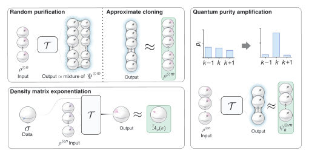
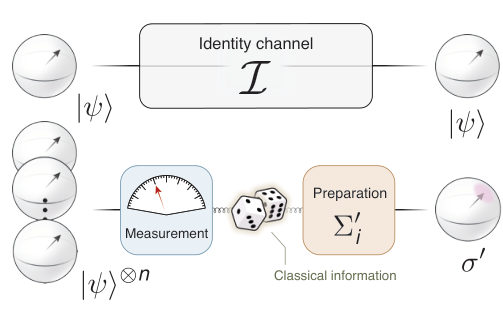
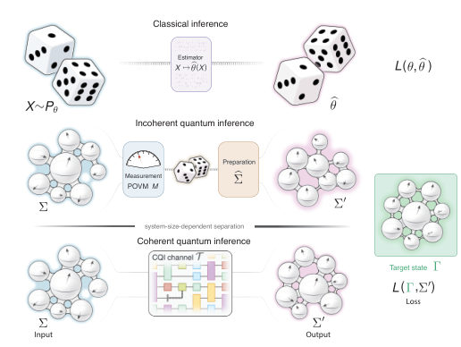
Summary. This paper establishes a new theory of coherent quantum inference, proving that processing quantum data via coherent channels can avoid the exponential 'curse of dimensionality' found in measurement-based protocols. It shows that tasks like density matrix exponentiation can be performed with a number of copies that does not scale with the system dimension. This provides a significant theoretical advantage for quantum computing and state processing tasks.
Why it may be interesting. This is highly relevant for researchers in quantum optics and open quantum systems as it provides a fundamental limit on how efficiently quantum information can be processed and reconstructed without the loss of coherence caused by measurement.
Main problem. The paper investigates whether coherent quantum inference (where the output is a quantum state) can achieve an exponential advantage in sample complexity compared to incoherent, measurement-based protocols.
Main result. The authors demonstrate that coherent protocols can achieve exponentially lower sample complexity than incoherent ones, specifically showing that tasks like Quantum Purity Amplification and Density Matrix Exponentiation can be dimension-independent, whereas incoherent protocols scale linearly with the Hilbert-space dimension.
Method. The study utilizes a mathematical framework involving Schur sampling, group twirling, and symmetry reduction, alongside de Finetti-type arguments to analyze the entanglement-breaking limit.
Model / system. The framework considers quantum channels acting on n copies of an unknown density matrix in a d-dimensional Hilbert space, specifically focusing on tasks like Random Purification, Quantum Purity Amplification, and Density Matrix Exponentiation.
Key observables. Sample complexity (n), infidelity, trace distance, and diamond norm.
Important parameters / regimes. Hilbert-space dimension (d), number of input copies (n), number of output copies (m), target error (epsilon), and spectral gaps between eigenvalues.
Assumptions / limitations. The loss functions are assumed to be jointly convex and Lipschitz continuous; the lower bounds specifically target incoherent or entanglement-breaking protocols.
Figures summary. Figure 3 illustrates the hierarchy of inference ranging from classical to incoherent quantum and coherent quantum protocols.
Paper structure. The paper introduces the concept of coherent quantum inference, establishes a unified framework for three representative tasks (RP, QPA, DME), provides mathematical proofs for risk convexity and symmetry reduction, and derives the exponential complexity separation between coherent and incoherent regimes.
Standard quantum inference converts quantum data into classical outputs. We study an alternative inference setting in which the desired output is quantum, preserving coherence. Such settings include quantum purity amplification (QPA), mixed-state approximate purification or cloning, and density matrix exponentiation. We show that such protocols can achieve exponentially lower sample complexity than incoherent, measurement-mediated protocols. For QPA with principal eigenstate targets and $d$-dimensional inputs, coherent processing achieves error $\varepsilon$ using $O(1/\varepsilon)$ copies, versus the $Ω(d/\varepsilon)$ copies required by any incoherent protocol. Together, these sharp coherent-incoherent separations seed a theory of coherent quantum inference, with an entanglement-breaking limit identifying the optimal incoherent counterpart of each coherent protocol.
Authors: Leon Miyahara, Shono Shibuya
Type: theory · Category: statistical mechanics · PDF: https://arxiv.org/pdf/2605.20913v1
Analysis basis: full PDF text, analyzed in chunks
Topic relevance: entanglement & information structure 3/5 · non-equilibrium dynamics 2/5 · scars & prethermalization 2/5




Summary. The authors show that the transition from chaos to integrability is visible even when looking only at the BPS ground states of a supersymmetric SYK model. By analyzing spectral statistics, they find that the BPS sector undergoes a smooth crossover from random-matrix to Poisson behavior. This suggests that the chaotic properties of the full spectrum are imprinted on the BPS subspace.
Why it may be interesting. This paper is interesting for many-body dynamics researchers because it demonstrates how spectral signatures of chaos can be inherited by a specific protected subspace (BPS), providing a new way to probe many-body chaos.
Main problem. The study investigates whether a chaos-integrability transition can be detected exclusively within the BPS (Bogomol'nyi-Prasad-Sommerfield) subspace of a supersymmetric model.
Main result. The BPS subspace exhibits a smooth crossover from random-matrix (GUE) statistics to Poisson statistics as the model transitions from a chaotic to an integrable regime.
Method. Numerical analysis of the spectrum of a projected operator onto the BPS subspace, using gap ratio, level-spacing distribution, and Spectral Form Factor (SFF) with Gaussian filtering.
Model / system. A deformed N=2 supersymmetric Sachdev-Ye-Kitaev (SYK) model that interpolates between a chaotic SYK limit and an integrable 'commuting' limit via a deformation parameter g.
Key observables. Average gap ratio
Important parameters / regimes. Deformation parameter g (controlling the transition), fermion number f, and system size N.
Assumptions / limitations. The analysis is performed at a finite N=12, and it is an open question if the crossover sharpens into a phase transition in the large N limit.
Figures summary. Figures show the transition of the gap ratio and level-spacing distribution from GUE to Poisson statistics, and the disappearance of the SFF ramp near g=1.2.
Paper structure. The paper introduces the deformed N=2 SYK model, defines the BPS subspace and the chaos-diagnostics framework, presents numerical results for the non-BPS and BPS sectors, and discusses implications and open questions.
We study chaos-integrability transition purely within a BPS subspace of a specific supersymmetric model that interpolates between the chaotic $\mathcal{N}=2$ SYK model and an integrable $\mathcal{N}=2$ "commuting" SYK model. Using the framework of BPS chaos, we analyze the spectrum of an operator projected onto the BPS subspace. We numerically find that its spectral statistics exhibit random-matrix behavior near the SYK limit and smoothly transitions to Poisson statistics near the integrable limit. Our results provide a direct example of a chaos-integrability crossover diagnosed solely from BPS states.
Authors: Lifen Guo, Qingqian Kang, Zekun Zhao, Jifeng Sun, Teng Zhao, Cunjin Liu, Xin Su, Liyun Hu
Type: theory · Category: quantum information and computing · PDF: https://arxiv.org/pdf/2605.20893v1
Analysis basis: full PDF text, analyzed in chunks
Topic relevance: quantum measurements 3/5 · Keldysh / 2PI / non-Gaussian methods 2/5 · interference shaping light 2/5
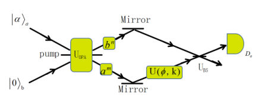

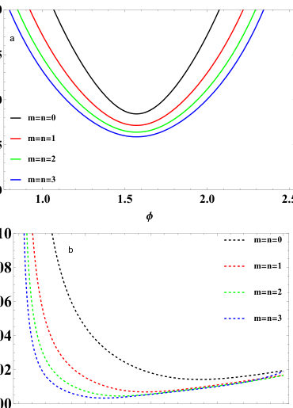
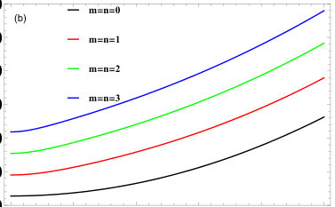
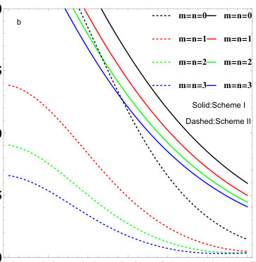
Summary. This paper proposes a new method for high-precision phase estimation by combining Kerr nonlinearity with multi-photon subtraction in a hybrid interferometer. The scheme achieves super-Heisenberg scaling and remains robust against photon loss, outperforming existing linear and SU(1,1) architectures.
Why it may be interesting. It presents a way to achieve super-Heisenberg scaling in quantum metrology using non-Gaussian state engineering and nonlinear optics, which is highly relevant to quantum optics and precision sensing.
Main problem. The challenge of achieving high-precision phase estimation in quantum metrology by overcoming the Standard Quantum Limit (SQL) and the conventional Heisenberg Limit (HL) while mitigating photon loss.
Main result. The integration of Kerr nonlinearity and multi-photon subtraction in a hybrid interferometer enables phase sensitivity to approach super-Heisenberg scaling (1/N^2) and provides enhanced robustness to decoherence.
Method. The authors use a generating function method to calculate expectation values and evaluate phase sensitivity via homodyne detection, analyzing Quantum Fisher Information (QFI) and the Quantum Cramér-Rao Bound (QCRB).
Model / system. A hybrid interferometer (HI) architecture consisting of an Optical Parametric Amplifier (OPA), a 50:50 beam splitter, and a phase shifter (either linear or Kerr nonlinear), utilizing coherent and vacuum states as inputs.
Key observables. Phase sensitivity (delta phi), Quantum Fisher Information (QFI), and the Quantum Cramér-Rao Bound (QCRB).
Important parameters / regimes. Coherent amplitude (alpha), OPA gain (g), photon-subtraction orders (m, n), and photon loss transmissivity (eta).
Assumptions / limitations. The model assumes a Kerr nonlinear phase evolution proportional to the squared photon number and uses a single-mode internal photon loss model via a fictitious beam splitter.
Figures summary. Figure 1 shows the HI schematic; Figure 4 shows mean photon number vs. gain and amplitude; Figure 9 shows QFI vs. gain; Figure 10 shows QCRB vs. gain and amplitude; Figure 11 shows lossy QCRB vs. transmissivity.
Paper structure. The paper introduces the problem of phase estimation, proposes a hybrid interferometer architecture with Kerr nonlinearity and photon subtraction, provides a mathematical framework for calculating sensitivity and QFI, compares linear vs. nonlinear schemes, and evaluates performance under lossy conditions.
We propose a high-precision phase estimation scheme in a hybrid interferometer by synergistically combining a Kerr nonlinear phase shifter and multi-photon subtraction operations. Using a coherent state and a vacuum state as input resources, we systematically evaluate the phase sensitivity via homodyne detection and analyze the quantum Fisher information as well as the quantum Cramér-Rao bound under both ideal and lossy conditions. Our results show that the joint integration of Kerr nonlinearity and multi-photon subtraction yields remarkable advantages over either technique used alone. The proposed scheme enables the phase sensitivity to surpass the standard quantum limit, exceed the conventional Heisenberg scaling ($1/N$), and approach the super-Heisenberg scaling ($1/N^{2}$)-a direct consequence of Kerr nonlinearity. More precisely, the super-Heisenberg scaling $\propto $ $1/N^{2}$ is the ultimate precision limit permitted by the $k=2$ Kerr nonlinearity and does not violate the fundamental Heisenberg limit for linear phase accumulation. Even under moderate internal photon loss, the system maintains high precision and exhibits enhanced robustness to decoherence. The Kerr nonlinearity introduces an intensity-dependent phase shift proportional to the squared photon number, while multi-photon subtraction tailors non-Gaussian states to strengthen phase information extraction. Compared with existing schemes based on hybrid interferometers or SU(1,1) interferometers, our architecture achieves superior precision and stronger loss resilience. All components are experimentally accessible with current quantum optical technologies. This work provides a promising route for practical high-precision quantum metrology and quantum sensing.
Authors: Kuntal Sengupta, Lewis Wooltorton
Type: theory · Category: quantum information and computing · PDF: https://arxiv.org/pdf/2605.21293v1
Analysis basis: full PDF text, analyzed in chunks
Topic relevance: entanglement & information structure 3/5 · correlated / nonlocal dissipation 2/5 · quantum measurements 2/5
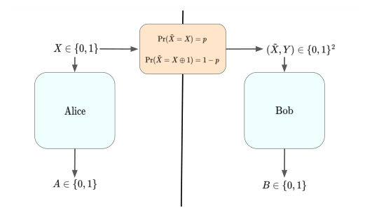
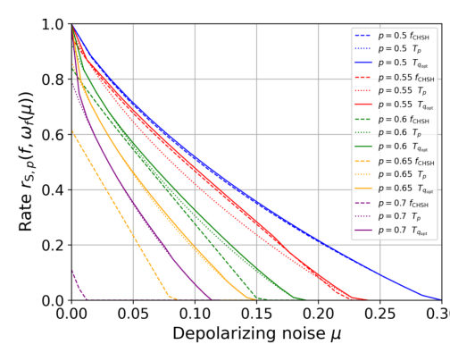
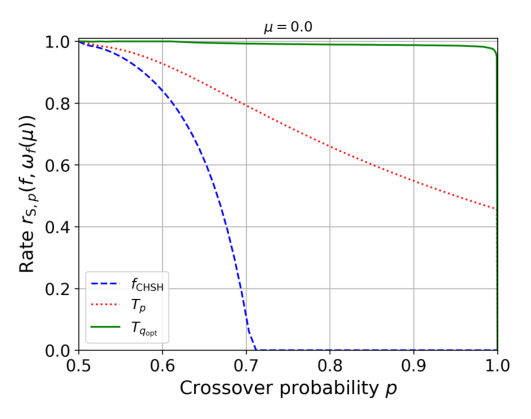
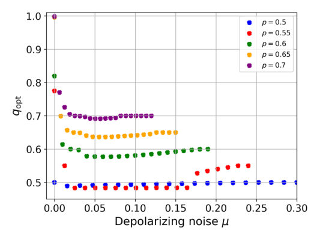
Summary. This paper proves that quantum nonlocality is robust to noisy signaling between parties. It identifies new Bell inequalities that outperform the CHSH inequality in certifying quantum correlations and randomness when input information is leaked through noisy channels.
Why it may be interesting. This work is highly relevant for quantum information theorists working on the security of device-independent protocols, as it provides a framework for understanding how physical imperfections like signal leakage affect the certification of entanglement and randomness.
Main problem. Investigating whether quantum nonlocality and device-independent randomness certification are robust against violations of the non-signaling assumption, specifically when inputs are leaked via noisy communication channels.
Main result. The authors identify new Bell inequalities that certify non-signaling quantum correlations even under one-way and two-way noisy signaling, and demonstrate that these new inequalities are more robust to depolarizing noise than the standard CHSH inequality.
Method. The study uses a geometric approach to characterize the vertices and facets of the Local Hidden Variable (LHV) polytope, employing an interpolation technique for continuous parameters and Sum of Squares (SOS) decomposition for proving quantum bounds.
Model / system. A bipartite Bell scenario involving two parties (Alice and Bob) with binary inputs and outputs, where a noisy binary symmetric channel transmits a copy of one party's input to the other.
Key observables. Bell functionals (specifically $T_p$ and $W_{p,r}$), correlators $\langle A_x B_y angle$, and the rate of device-independent randomness generation.
Important parameters / regimes. Crossover probability/fidelity ($p, q, r, s$), measurement dependence parameter ($l$), and signaling strength ($\epsilon$).
Assumptions / limitations. The analysis focuses on the minimal Bell scenario (2 inputs, 2 outputs) and assumes projective measurements for self-testing claims.
Figures summary. Figure 1 illustrates the one-way signaling mechanism via a binary symmetric channel; Figure 4 shows the certification of randomness as a function of the noise parameter.
Paper structure. The paper begins by defining the noisy signaling model, proceeds to characterize the LHV polytope facets using interpolation, establishes mathematical equivalences between signaling and parameter-dependence models, and concludes with the derivation of new Bell inequalities and their robustness to noise.
Given a pair of isolated devices that accept random binary inputs and return binary outputs, a user can deduce from the observed data alone if the underlying mechanism can be explained classically. Bell's theorem further states that a classical explanation can be ruled out if the devices perform certain measurements on an entangled quantum state, underpinning the security of cryptographic protocols that are device-independent (DI). For certain protocols, such as those performed in a tight space, it might be difficult to perfectly enforce the non-signaling assumption required in Bell's theorem. This prompts the question: is quantum nonlocality robust to such imperfections? We show that if a binary channel sends a noisy copy of one party's input to the other before any measurements take place, the answer is yes. We completely characterize the vertices and facets of the local polytope in this scenario, and identify Bell inequalities that certify non-signaling quantum correlations. This is possible even when a near perfect copy of the input is sent. We go on to show that the identified inequalities are more robust to depolarizing noise than the Clauser-Horne-Shimony-Holt inequality when certifying DI randomness in this scenario. In addition, we characterize the local polytope when both parties receive a noisy copy of each other's input and make similar conclusions, leaving many new potential Bell inequalities to be explored.
Authors: Jörg Hettel
Type: theory · Category: quantum information and computing · PDF: https://arxiv.org/pdf/2605.21274v1
Analysis basis: full PDF text, analyzed in chunks
Topic relevance: entanglement & information structure 3/5 · methods for driven-dissipative 2/5 · quantum measurements 2/5
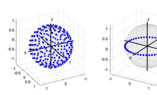
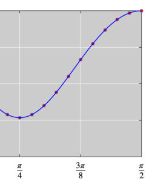
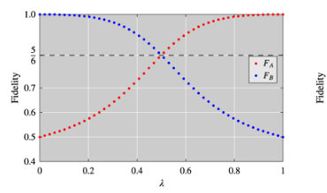
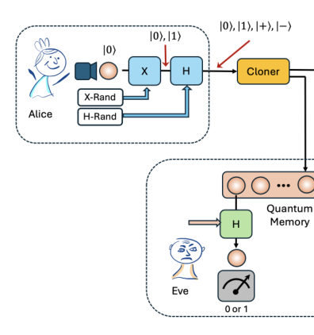
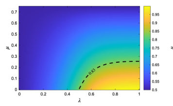
Summary. This paper introduces a computational framework using Semidefinite Programming to find explicit Kraus operators for various quantum cloning tasks. It bridges the gap between theoretical cloning limits and practical implementation by providing a systematic catalogue of usable operators. The utility of the method is demonstrated through a quantitative security analysis of the BB84 protocol under depolarizing noise.
Why it may be interesting. This is highly relevant for researchers in quantum information and open quantum systems as it provides a practical tool for designing and characterizing optimal quantum channels and analyzing eavesdropping attacks in noisy environments.
Main problem. The paper addresses the lack of explicit, implementable operator representations for various quantum cloning scenarios, moving beyond theoretical limits to find practical Kraus operators.
Main result. The authors present a unified computational framework that provides a catalogue of explicit Kraus representations for universal, phase-covariant, asymmetric, and entanglement cloning, and apply it to analyze BB84 security under noise.
Method. The framework uses Semidefinite Programming (SDP) combined with the Choi-Jamiołkowski isomorphism to optimize CPTP maps and extracts Kraus operators via spectral decomposition.
Model / system. The study focuses on quantum cloning channels (M to N processes) including universal, phase-covariant, and asymmetric cloning, as well as entanglement cloning of two-qubit states.
Key observables. Fidelity (global and local), duality gap, Quantum Bit Error Rate (QBER), and concurrence.
Important parameters / regimes. Asymmetry parameter (lambda), depolarization strength (mu), and the size of the input state sampling set (S).
Assumptions / limitations. The framework is limited to finite-dimensional Hilbert spaces and assumes the accuracy of the optimization depends on the coverage of the chosen sampling set.
Figures summary. Figure 1 shows input state distributions on the Bloch sphere; Figure 2 compares numerical fidelities to analytical bounds; Figure 3 shows fidelity trade-offs in asymmetric cloning; Figure 4 depicts a BB84 cloning attack; Figure 5 plots Bob's fidelity against asymmetry and noise.
Paper structure. The paper introduces the optimization problem, details the SDP and Choi-matrix framework, presents a catalogue of cloning results, applies the framework to a BB84 security analysis, and discusses future extensions like symmetry reduction.
While algebraic derivations establish theoretical limits for quantum cloning, practical implementations require explicit operator representations that are often unavailable analytically. We present a computational framework that reformulates cloning optimization as a search over completely positive trace-preserving maps using the Choi-Jamiolkowski isomorphism and Semidefinite Programming. The framework (i) numerically certifies global optimality through primal-dual strong duality and (ii) automatically extracts operational Kraus operators from the optimal Choi matrix via spectral decomposition. We systematically treat universal, phase-covariant, asymmetric, and entanglement cloning scenarios, providing -for the first time - a unified computational catalogue of explicit, implementable Kraus representations across all major cloning families, including higher-order processes and arbitrary input state distributions. As an application, we analyse optimal cloning attacks on BB84 under depolarizing noise, demonstrating how the extracted operators enable quantitative security analysis in realistic noisy quantum channels. An open-source implementation enables community validation and extension.
Authors: Maja Franz, Melvin Strobl, Jonathan Hunz, Lukas Scheller, Lucas van der Horst, Eileen Kuehn, Achim Streit, Wolfgang Mauerer
Type: theory · Category: quantum information and computing · PDF: https://arxiv.org/pdf/2605.21286v1
Analysis basis: full PDF text, analyzed in chunks
Topic relevance: entanglement & information structure 3/5 · methods for driven-dissipative 2/5 · non-equilibrium dynamics 2/5
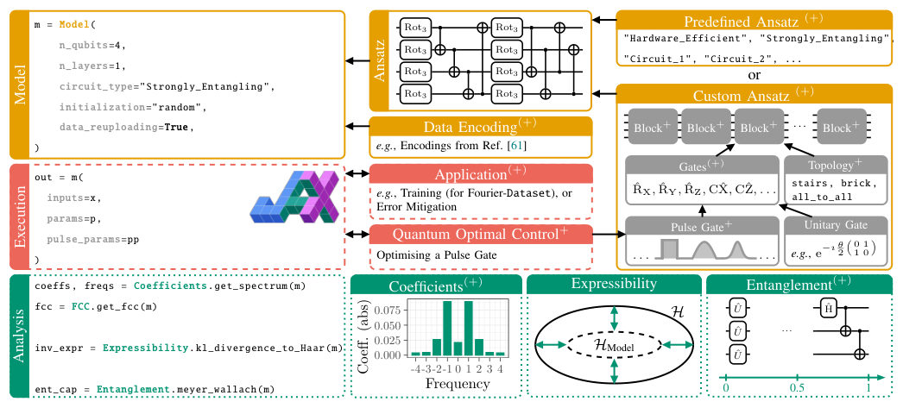
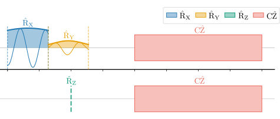
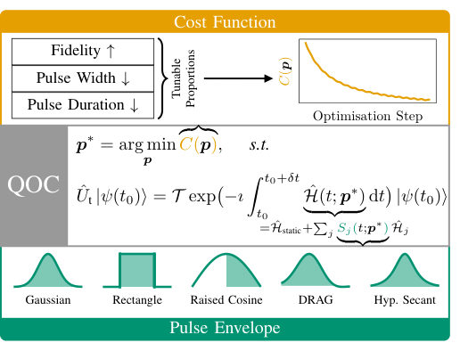
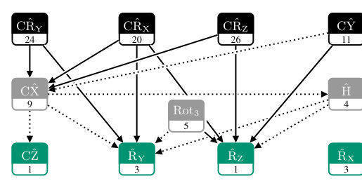
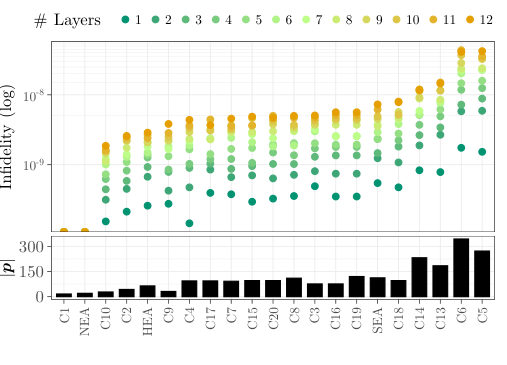
Summary. The authors present QML-ESSENTIALS, a software framework that bridges the gap between abstract quantum circuits and low-level hardware control pulses. By integrating quantum optimal control with quantum machine learning, the tool allows researchers to optimize pulse parameters directly and analyze the spectral and entangling properties of quantum models. This enables more hardware-aware and efficient development of quantum machine learning algorithms.
Why it may be interesting. It provides a unified toolset for studying how the physical dynamics of control pulses directly influence the functional properties (like spectral bias and trainability) of quantum machine learning models, which is crucial for developing robust open quantum system controllers.
Main problem. The gap between high-level, gate-based quantum machine learning (QML) abstractions and low-level, hardware-aware control pulses, which limits the ability to exploit hardware-specific features like error mitigation.
Main result. The development of the QML-ESSENTIALS software framework, which enables seamless integration of pulse-level modeling with QML methodologies, allowing for end-to-end optimization of pulse parameters and advanced Fourier-analytic diagnostics.
Method. A high-performance Python framework built on JAX that implements Quantum Optimal Control (QOC) techniques, differentiable quantum simulation, and a suite of metrics including Fourier coefficient correlation (FCC) and entanglement measures.
Model / system. The framework focuses on programmable quantum computing platforms, specifically superconducting qubits (transmons) modeled as periodically driven two-level systems with time-dependent Hamiltonians.
Key observables. Fourier spectrum (frequencies and coefficients), Fourier Coefficient Correlation (FCC), expressibility (KL-divergence), and entanglement measures (Entanglement of Formation, Concentratable Entanglement, and Meyer-Wallach).
Important parameters / regimes. Pulse parameters (amplitude, width, duration), gate infidelities, and circuit depth.
Assumptions / limitations. The framework assumes a closed quantum system for certain analyses and uses the Rotating-Wave Approximation (RWA) to reduce integration stiffness during pulse simulation.
Figures summary. Figure 1 shows a code example and the framework's structural hierarchy; Figure 2 illustrates pulse sequence diagrams; Figure 5 compares gate infidelity and pulse parameters against circuit depth; Figure 6 compares expressibility and FCC; Figure 8 compares various entanglement measures under noiseless and noisy conditions.
Paper structure. The paper introduces the motivation for bridging the gate-pulse gap, details the QML-ESSENTIALS software architecture and JAX-based simulation, describes the implementation of Quantum Optimal Control for pulse-level gates, presents benchmarking of QML ansatz properties (Fourier and entanglement metrics), and concludes with the framework's utility for future hardware-aware QML research.
Contemporary quantum computing platforms remain, in essence, programmable physical systems whose control is typically mediated through unitary gate abstractions. While such abstractions provide a uniform interface, they obscure important aspects of the underlying hardware and may limit the exploitation of its full capabilities. Direct operation at the control-pulse level offers a more expressive and physically faithful paradigm, enabling, for instance, the implementation of tailored error-mitigation and optimisation strategies. However, this increased expressivity comes at the cost of greater quantum software development complexity, necessitating structured and accessible tooling. We present a software framework, integrated within the QML-Essentials package, that extends quantum machine learning (QML) methodologies to encompass pulse-level modelling. By embedding quantum optimal control techniques within a QML setting, our approach enables the seamless combination of gate-based and pulse-level representations. The framework provides a comprehensive suite of modelling and analytical capabilities. In particular, we introduce composable ansatz constructions based on interchangeable building blocks, and support for end-to-end optimisation of pulse parameters. Motivated by the central role of quantum Fourier models, we further incorporate a range of Fourier-analytic diagnostics, complemented by extended measures of entanglement. All performance-critical components are implemented in a high-performance environment using JAX and supported by a dedicated quantum simulator. Taken together, the framework facilitates reproducible and systematic investigations, while bridging the conceptual and practical divide between abstract circuit models and hardware-aware optimisation. It provides a robust foundation for future developments at the intersection of QML and quantum control.
Authors: Grgeory D. Scholes
Type: theory · Category: quantum information and computing · PDF: https://arxiv.org/pdf/2605.21243v1
Analysis basis: full PDF text, analyzed in chunks
Topic relevance: entanglement & information structure 3/5 · quantum measurements 3/5
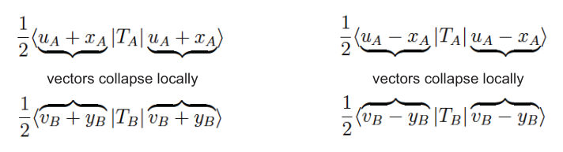
Summary. This paper proposes a 'contextual phase theory' to explain quantum measurement collapse and nonlocality as inherent features of the existing linear mathematical framework. By treating the wavefunction as an equivalence class of local representatives, the author shows that correlations and definite outcomes emerge naturally without needing non-local interactions. This provides a way to reconcile the statistical nature of quantum mechanics with the appearance of definite local results.
Why it may be interesting. It offers a novel theoretical perspective on the measurement problem and the interpretation of entanglement, which is fundamental to understanding the foundations of quantum information and the dynamics of entangled subsystems.
Main problem. The paper seeks to provide a mechanistic explanation for the collapse of the state vector and the origin of nonlocal correlations in entangled systems without invoking ad hoc postulates or 'spooky action at a distance'.
Main result. The author demonstrates that the mechanism for state vector collapse and nonlocal correlations can be derived from the existing linear theory of quantum mechanics by using a 'contextual phase theory' that identifies how a single wavefunction encodes statistical outcomes.
Method. The approach utilizes an algebraic framework involving quotient spaces, free vector spaces, and a 'wave basis' to map entangled states in a tensor product space to local representatives in subsystem Hilbert spaces.
Model / system. The study focuses on bipartite entangled quantum systems (such as electrons or photons) described by a composite Hilbert space (HA ⊗ HB), specifically using the EPR/Bohm singlet state as a primary platform.
Key observables. Pauli operators (sigma_z, sigma_x), polarization (H/V), and correlation functions (expectation values of product operators).
Important parameters / regimes. Contextual phases (phi), measurement bases (x, y, z), and measurement angles (alpha, beta).
Assumptions / limitations. The theory assumes the standard postulates of quantum mechanics (unitary evolution and Born rule) and relies on the existence of a 'contextual phase class' within a covering space representation.
Figures summary. A summary scheme illustrating the workflow from a single wavefunction to the identification of representatives in a free vector space, their split into two classes, and their projection into local subsystem Hilbert spaces.
Paper structure. The paper progresses from defining the tensor product basis and algebraic construction to discussing how wavefunctions encode statistical outcomes, followed by the introduction of the contextual phase model and concluding with the derivation of collapse and nonlocality.
It is shown how to obtain state vectors associated with measurements on the separated subystems of an entangled state, revealing how a single wavefunction encodes a set of statistical measurement outcomes. The result explains why measurements on the subsystems give definite outcomes and why measurements on one subsystem are correlated with those on the other. It is therefore concluded that the theory of quantum mechanics, without nonlinearities or \emph{ad hoc} assertions, can explain both the mechanism of state vector collapse and the reason for the paradoxical nonlocal correlations between separated subsystems.The theory also explains how quantum correlations, including correlations that violate Bell's inequality, are read out by classical measurements.
Authors: Kamal Azaidaoui, Hocine Bahlouli, Clarence Cortes, David Laroze, Ahmed Jellal
Type: theory · Category: other · PDF: https://arxiv.org/pdf/2605.20790v1
Analysis basis: full PDF text, analyzed in chunks
Topic relevance: non-equilibrium dynamics 3/5 · spintronics-quantum-optics interface 2/5
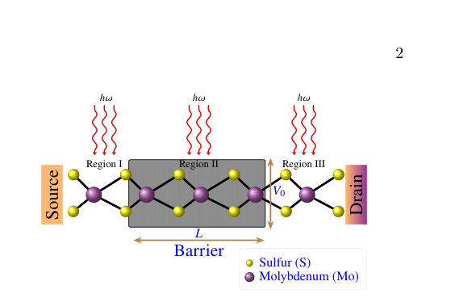
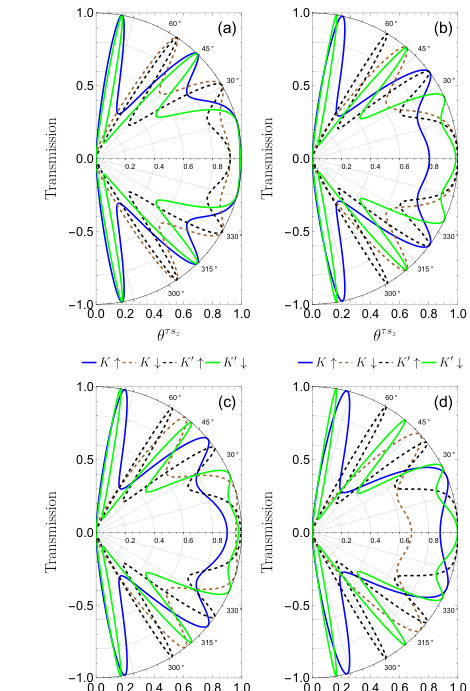
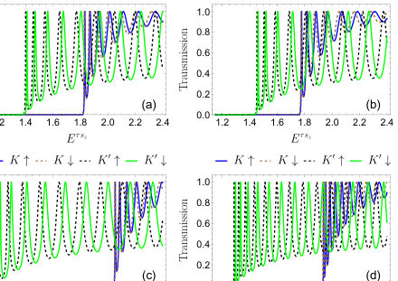
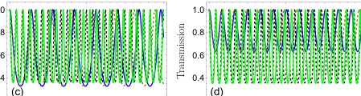
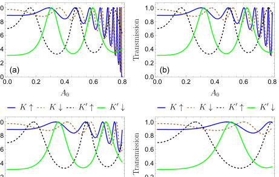
Summary. This paper demonstrates how mid-infrared laser light can be used to optically tune the transport of electrons in MoS2. By adjusting the laser's intensity and polarization, researchers can switch the material between a valley filter and a resonance-selective conductor. This provides a potential pathway for creating reconfigurable valleytronic and spintronic devices.
Why it may be interesting. not directly relevant
Main problem. Investigating how off-resonant, elliptically polarized laser driving can be used to control and switch spin-valley transport in monolayer MoS2 junctions.
Main result. The laser drive allows for an optical switch between broadband valley filtering and resonance-selective operation, even enabling a 'valley-selective switch-off' where the K valley is driven into an evanescent regime.
Method. High-frequency Floquet expansion to derive an effective static Hamiltonian, combined with a scattering formalism using spinor matching at the barrier interfaces.
Model / system. A monolayer MoS2 junction featuring a rectangular electrostatic barrier subject to off-resonant, mid-infrared, elliptically polarized light, modeled via a massive Dirac Hamiltonian with intrinsic spin-orbit coupling.
Key observables. Transmission probability, Landauer conductance, valley contrast, and spin-resolved conductance.
Important parameters / regimes. Laser amplitude (A0), polarization ellipticity (xi), barrier height (V0), barrier width (L), and photon energy (hbar omega).
Assumptions / limitations. The high-frequency, off-resonant regime where photon energy is larger than the spin-orbit coupling but smaller than the band gap (no real interband transitions).
Figures summary. Fig 1: Schematic of the junction; Fig 2: Spin/valley-resolved transmission vs. incident angle; Fig 3: Transmission vs. barrier width showing Fabry-Perot fringes; Fig 4: Transmission vs. energy showing threshold shifts; Fig 5: Regulation of Floquet dressing by laser amplitude; Fig 6: Transmission as a function of polarization ellipticity; Fig 8: Conductance vs. laser amplitude showing the K-valley switch-off.
Paper structure. The paper introduces the physical system and problem, describes the Floquet-engineered Hamiltonian and scattering model, presents numerical results regarding angular and energy-dependent transmission, explores the effects of laser intensity and polarization, and concludes with implications for valleytronic applications.
We study field-controlled spin-valley transport in monolayer MoS$_2$ through a single electrostatic barrier and a uniform off-resonant elliptically polarized irradiation. Starting from the massive Dirac Hamiltonian with intrinsic spin-orbit coupling, we use a high-frequency Floquet expansion to obtain an effective static model with a laser-renormalized mass (gap) term. We solve the scattering problem by spinor matching and derive the exact analytic expression for the transmission. The numerical results show that the drive tunes both the spin-valley-dependent propagation threshold inside the barrier and the Fabry-Pérot phase, creating controllable pass/stop bands. By varying both the laser intensity (amplitude) and the polarization shape, we show that the same junction can be switched between broadband valley filtering and resonance-selective operation, and the valley contrast remains visible in the Landauer conductance. Our findings establish an efficient route for realizing optically reconfigurable valleytronic and spintronic functionalities in MoS$_2$.
Authors: Samuel Schlegel, Ankit Kumar, Tomasz Paterek, Borivoje Dakić
Type: theory · Category: quantum information and computing · PDF: https://arxiv.org/pdf/2605.20330v1
Analysis basis: full PDF text, analyzed in chunks
Topic relevance: entanglement & information structure 3/5 · quantum measurements 2/5
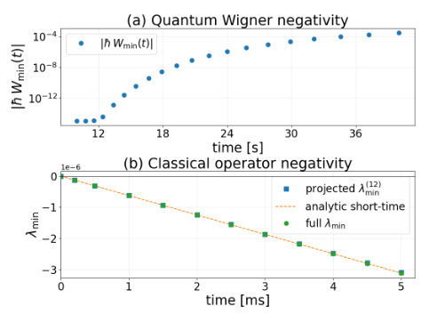
Summary. This paper demonstrates that standard optomechanical experiments using Gaussian states and quadratic potentials cannot distinguish between quantum and classical gravity. It proposes that detecting non-classicality requires probing higher-order potential terms or using non-Gaussian states, which significantly increases the required experimental precision and sample complexity.
Why it may be interesting. It addresses the fundamental challenge of verifying quantum gravity signatures and provides rigorous bounds on the experimental requirements needed to rule out classical phase-space mimics in optomechanical setups.
Main problem. Distinguishing between truly quantum gravitational entanglement and classical models that can reproduce the same experimental signatures in optomechanical systems.
Main result. The authors show that classical models can mimic entanglement in the quadratic/Gaussian regime, and that detecting non-classicality requires moving to non-Gaussian states or higher-order (cubic) potential terms, which requires significantly more stringent experimental conditions.
Method. The study uses the Wigner-Weyl representation and Moyal evolution to compare quantum and classical dynamics, employing perturbative expansions and randomized quadrature measurements to estimate witness effectiveness and sample complexity.
Model / system. A system of two identical spherical masses in an optomechanical setup, modeled by a Hamiltonian containing a Newtonian potential expanded via multipole expansion to include cubic corrections.
Key observables. Wigner negativity, negativity of the Weyl operator, logarithmic negativity, quadrature measurements, and cross-axis correlations.
Important parameters / regimes. Mass (m), separation (L), gravitational coupling (omega), initial state width (sigma), and interaction time (t).
Assumptions / limitations. The analysis assumes the weak gravity regime allows for a truncated potential expansion and considers the feasibility of detecting signatures in the momentum tails of Gaussian states.
Figures summary. Figure 1 shows the emergence of phase-space negativity in the quantum dynamics.
Paper structure. The paper identifies the overlap problem between classical and quantum models, develops a mathematical framework using Wigner-Weyl transforms, analyzes specific witnesses for non-classicality and non-quantumness, and concludes with an assessment of experimental feasibility and sample complexity.
Observation of gravitationally induced quantum entanglement is often interpreted as a direct evidence of non-classical gravity. While the form and the degree of non-classicality have been rigorously studied from a foundational perspective, classical models reproducing experimental signatures of such entanglement remain underexplored. Motivated by the experimental simplicity, nearly all existing optomechanical approaches assume Gaussian initial states, and due to the weakness of gravity the quantum Newtonian potential is truncated at the second order. However, this regime admits a classical description in terms of the Wigner-Weyl representation, including features typically associated with quantum entanglement. A clear distinction between classical and quantum predictions emerges only beyond this setting. We comprehensively analyze the possibilities and provide operational witnesses for detection of non-classicality via Wigner negativity, and detection of non-quantumness via negativity of the Weyl operator. Our results demonstrate that the experimental requirements on certifying gravitational entanglement are more stringent than previously anticipated.
Authors: Zihua Song, Lin Chen, Yongge Wang
Type: theory · Category: quantum information and computing · PDF: https://arxiv.org/pdf/2605.20958v1
Analysis basis: full PDF text, analyzed in chunks
Topic relevance: entanglement & information structure 3/5 · quantum measurements 2/5
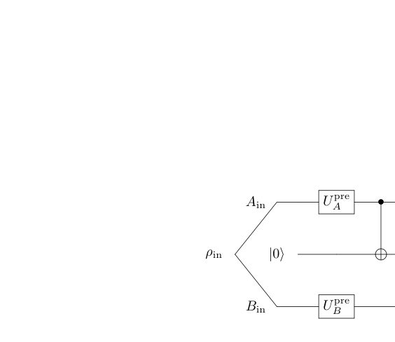
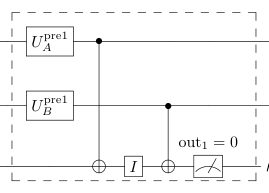
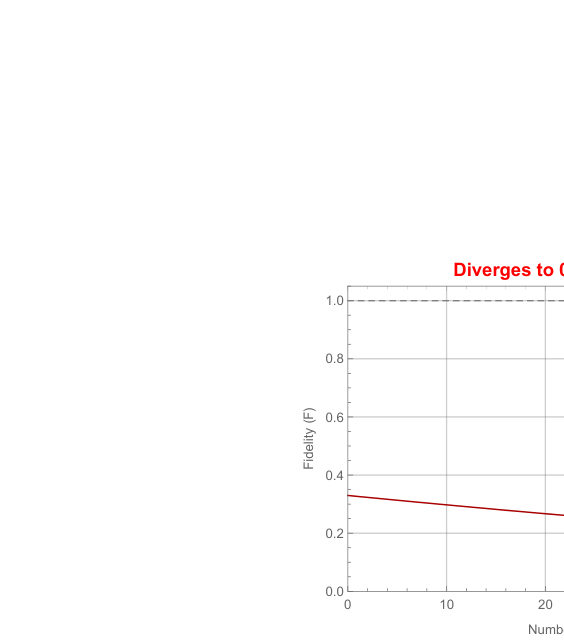
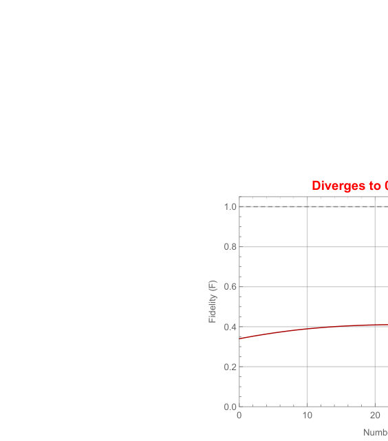
Summary. This paper proposes a new method for purifying qutrit entanglement that overcomes the limitations of standard protocols under asymmetric noise. By using Mutually Unbiased Bases to rotate the error distribution, the authors prove that any state with initial fidelity above 1/3 can be purified to perfect fidelity. This provides a scalable and robust strategy for high-dimensional quantum communication.
Why it may be interesting. This is highly relevant for quantum networking and open quantum systems, as it provides a robust theoretical framework for maintaining high-dimensional entanglement in the presence of realistic, non-symmetric environmental noise.
Main problem. The challenge of distilling high-dimensional (qutrit) entanglement under realistic, asymmetric Pauli noise, where standard protocols fail due to convergence bottlenecks caused by marginal X-error probabilities.
Main result. The introduction of an adaptive MUB-based pre-processing scheme allows the mCAEPPS protocol to deterministically achieve unit asymptotic fidelity for any two-qutrit Pauli channel, provided the initial fidelity is above 1/3.
Method. The authors use a stabilizer code framework (mCAEPP) combined with a deterministic pre-processing scheme using Mutually Unbiased Bases (MUBs) to rotate the qutrit phase space, establishing primary-axis error dominance.
Model / system. The system consists of two-qutrit (three-dimensional) systems subject to general asymmetric qutrit Pauli channels, modeled using generalized Pauli operators X and Z.
Key observables. Entanglement fidelity (p00), success probability (P_succ), and marginal error probabilities (X and Z error rates).
Important parameters / regimes. Initial fidelity threshold (p00 > 1/3), number of carrier qutrits (m), and number of purification rounds (n).
Assumptions / limitations. The initial state must be distillable (p00 > 1/3); the protocol assumes perfect local operations and requires channel tomography to determine the necessary MUB rotation.
Figures summary. Figure 1 shows the single-carrier CAEPP circuit; Figure 2 illustrates the two-round purification process; Figure 3 shows fidelity divergence; Figure 7 shows the scalable mCAEPP circuit; Figure 8 shows the adaptive mCAEPP circuit with MUB pre-processing.
Paper structure. The paper defines the stabilizer framework and CAEPP/mCAEPP protocols, identifies the convergence bottleneck in asymmetric noise, introduces the MUB-based pre-processing strategy, and provides mathematical proofs for error suppression and asymptotic convergence to unit fidelity.
Distilling high-dimensional quantum entanglement under realistic, general asymmetric noise remains a formidable challenge. Standard entanglement purification protocols inevitably fail to satisfy convergence constraints under severe asymmetric noise. In this paper, we investigate carrier-assisted entanglement purification protocols, namely CAEPP and mCAEPP, for two-qutrit systems, demonstrating that without adaptive pre-processing, convergence is strictly bottlenecked by marginal $X$-error probabilities. To overcome this limitation, we introduce a deterministic pre-processing scheme based on mutually unbiased bases (MUBs). By actively rotating the qutrit phase space to establish primary-axis error dominance, we rigorously prove that the MUB-adapted mCAEPP deterministically yields unit asymptotic fidelity for any two-qutrit Pauli channel with initial fidelity $p_{00} > 1/3$.
Authors: Farhad Farokhi
Type: theory · Category: quantum information and computing · PDF: https://arxiv.org/pdf/2605.20765v1
Analysis basis: full PDF text, analyzed in chunks
Topic relevance: quantum measurements 3/5 · entanglement & information structure 2/5
Summary. This paper proves that in distributed quantum sensing, maximizing precision for a specific target parameter automatically maximizes privacy for all orthogonal parameters. It demonstrates that GHZ states are optimal for achieving this 'privacy for free' by reaching the Heisenberg limit while zeroing out information in other directions.
Why it may be interesting. It provides a fundamental information-theoretic link between sensing sensitivity and data privacy, which is highly relevant for designing secure quantum networks and distributed sensing protocols in quantum optics and sensing.
Main problem. Investigating the fundamental trade-off between estimation precision and parameter privacy in distributed quantum sensor networks.
Main result. The paper establishes a QFI duality where the sum of Fisher information for orthogonal sensing directions is bounded by N, implying that achieving Heisenberg-limited precision for a target parameter inherently provides privacy by nullifying information in orthogonal directions.
Method. The study uses the Quantum Fisher Information Matrix (QFIM) formalism, spectral decomposition, and the trace identity of the QFIM under local unitary encoding.
Model / system. A distributed network of N qubits (sensors) undergoing local phase encoding via local unitary operations U_j = exp(-1/2 i theta_j sigma_z).
Key observables. Quantum Fisher Information (QFI) for sensing directions, and the Quantum Fisher Information Matrix (QFIM).
Important parameters / regimes. Number of sensors (N), Heisenberg-limited precision (F_Q = N), Standard Quantum Limit (F_Q = 1), and the precision-privacy Pareto frontier.
Assumptions / limitations. The analysis assumes equatorial probe states, local unitary encoding, and an 'honest but curious' estimator who does not manipulate the probe state.
Figures summary. Figure 1 illustrates the precision-privacy Pareto frontier for N=2 equatorial probes, showing the linear relationship between QFI in orthogonal directions.
Paper structure. The paper introduces the precision-privacy problem, derives the QFI duality theorem, explores equality conditions for GHZ and equatorial states, and discusses the implications for multi-target sensing and privacy.
We establish a quantum Fisher information (QFI) duality for distributed quantum sensor networks with local phase encoding. For any $N$-qubit probe state, where $N$ denotes the number of sensors, $F_Q(\boldsymbol{w}^\top \boldsymbolθ) + F_Q(\boldsymbol{v}^\top \boldsymbolθ) \leq N$ for all unit orthogonal sensing directions $\boldsymbol{w}$ and $\boldsymbol{v}$, with equality for all equatorial states when $N=2$ and for Greenberger--Horne--Zeilinger (GHZ) states when $N\geq 2$. Heisenberg-limited precision for direction $\boldsymbol{w}$, $F_Q(\boldsymbol{w}^\top \boldsymbolθ)=N$, saturates the bound and simultaneously forces zero QFI for all other independent directions. This can be interpreted as the condition for parameter privacy in distributed quantum sensing: attaining Heisenberg-limited precision for the sensing target renders all alternative privacy-intrusive estimations impossible.
Authors: Feng Zhang, Niladri Gomes, Joshua Aftergood, Thomas Iadecola, Yong-Xin Yao, Peter P. Orth
Type: theory · Category: quantum information and computing · PDF: https://arxiv.org/pdf/2605.20378v1
Analysis basis: full PDF text, analyzed in chunks
Topic relevance: quantum measurements 3/5 · non-equilibrium dynamics 2/5
Summary. This paper proposes a method to optimize measurement shot allocation in variational quantum dynamics to mitigate the effects of sampling noise. By using Tikhonov regularization and a strategic distribution of shots, the authors show that one can achieve higher simulation fidelity with significantly fewer total measurements. This provides a practical roadmap for more efficient ground-state preparation on near-term quantum devices.
Why it may be interesting. This paper is highly relevant for many-body dynamics as it provides practical, algorithmic solutions to the primary bottleneck (sampling noise) in performing quantum dynamics simulations on near-term NISQ hardware.
Main problem. Addressing the impact of sampling noise (shot noise) on Variational Quantum Dynamics Simulations (VQDS), specifically regarding the instability of the Quantum Geometric Tensor inversion and the inefficient distribution of measurement shots.
Main result. The authors demonstrate that Tikhonov regularization provides robust stability for the equations of motion and that an optimized shot allocation strategy can reduce total measurement cost by more than a factor of two while improving state fidelity.
Method. The study uses noisy circuit simulations of 1D Ising models, comparing Tikhonov regularization against eigenvalue truncation and implementing a recursive shot-allocation algorithm that minimizes a cost function related to parameter update variance.
Model / system. One-dimensional quantum spin models, specifically the Transverse-Field Ising Model (TFIM) and the Mixed-Field Ising Model (MFIM), used for ground-state preparation via imaginary-time evolution.
Key observables. State fidelity, energy, Quantum Geometric Tensor (QGT) elements, and the condition number of the metric matrix.
Important parameters / regimes. Regularization parameter (epsilon), time step (delta t), total measurement budget (M_tot), and the shot distribution ratio (r).
Assumptions / limitations. The variational ansatz is assumed to be sufficiently expressive, the QGT matrix is assumed to be symmetric, and raw measurements are assumed to be independent.
Figures summary. Figure 1 shows the variational ansatz architecture; Figure 2 compares regularization performance; Figure 4 shows infidelity versus the shot distribution ratio; Figure 5 compares the efficiency of optimized vs. uniform shot allocation; Figure 6 shows performance across different evolution times.
Paper structure. The paper introduces the problem of sampling noise in VQDS, presents a comparison of regularization techniques, introduces a new recursive algorithm for optimized shot allocation, benchmarks this algorithm using noisy simulations of the TFIM, and discusses the broader applicability of the framework to other variational algorithms.
Variational quantum dynamics simulations (VQDS) provide a promising route to simulate real- and imaginary-time quantum dynamics on noisy intermediate-scale quantum devices using fixed-depth circuits. However, their practical performance is strongly limited by sampling noise arising from a finite number of circuit measurements. In this work, we systematically investigate the impact of sampling noise on VQDS, with a focus on ground-state preparation in one-dimensional Ising spin models using imaginary time evolution. We compare different regularization strategies for stabilizing the equations of motion and show that Tikhonov regularization provides robust performance in noisy imaginary-time evolution. We then benchmark measurement-distribution strategies that allocate shots by minimizing a cost function that characterizes the error in solving the equation of motion. Using noisy circuit simulations, we demonstrate that such optimized shot allocation can significantly improve state fidelity and reduce the total measurement cost by more than a factor of two compared to uniform shot distributions. We observe that the best results are found if a sufficiently large number of measurements is guaranteed for all circuits, suggesting that a finite fraction of shots should be distributed evenly. Our results provide practical guidelines for implementing measurement-efficient variational quantum dynamics and ground-state preparation on near-term quantum hardware.
Authors: Marco Cattaneo
Type: theory · Category: quantum information and computing · PDF: https://arxiv.org/pdf/2605.20907v1
Analysis basis: full PDF text, analyzed in chunks
Topic relevance: methods for driven-dissipative 3/5 · correlated / nonlocal dissipation 2/5
Summary. This paper provides a systematic way to construct symmetric unitary dilations and collision models for Pauli channels. By leveraging the symmetry properties of the Pauli group, the author derives explicit Hamiltonians that can be used to simulate quantum noise in both laboratory settings and on quantum computers.
Why it may be interesting. This work is highly relevant for researchers in open quantum systems and quantum computing as it provides explicit protocols for simulating noise (Pauli channels) via unitary dynamics and collision models, which is essential for quantum error mitigation and hardware-efficient simulation.
Main problem. The paper investigates the symmetry properties of Stinespring dilations for single-qubit Pauli channels and seeks to construct explicit, symmetric, time-dependent Hamiltonians and collision models that generate these channels and semigroups.
Main result. The author demonstrates that the covariance of Pauli channels imposes strong constraints on the dilation Hamiltonian and the initial environment state, allowing for the explicit construction of physical dilations for phase damping and depolarizing channels.
Method. The study utilizes the Stinespring dilation theorem, group representation theory (specifically the Pauli group and SU(2)), and the analysis of the Pauli commutant to derive Hamiltonian structures and environment representations.
Model / system. The models include single-qubit Pauli channels (phase damping and depolarizing), Pauli dynamical semigroups, and quantum collision models in the fast-collision limit, involving a system qubit coupled to an environment.
Important parameters / regimes. The fast-collision limit (delta t approaching 0), Kraus rank, and the scaling of interaction strength relative to the time step.
Assumptions / limitations. The focus is restricted to single-qubit Pauli channels, and the environment is assumed to be in a pure state.
Paper structure. The paper begins by exploring the symmetry properties of Stinespring dilations, moves to deriving representations of the Pauli group on the environment, then focuses on constructing time-dependent dilations and collision models, and concludes with explicit examples for specific Pauli channels.
We explore the symmetry properties of Stinespring dilations of single-qubit Pauli channels, addressing both the generic case and the specific examples of phase damping and depolarizing channels. For each scenario, we derive the representation of the Pauli group acting on the Hilbert space of the environment. We then focus on dilations that are continuous in time and driven by a time-independent Hamiltonian, and on collision models that generate a Pauli dynamical semigroup in the limit of fast collisions. First, we complement some recent general results on these types of dilations (M. Cattaneo, Phys. Rev. A 111, 022209 (2025)) with some additions and clarifications, including the case of covariant channels with strongly conserved quantities. Next, we show that the covariance property of Pauli channels impose strong constraints on both the dilation Hamiltonian and the initial state of the environment, and demonstrate how these constraints can be exploited to explicitly construct the time-dependent dilations in all considered cases. Our results are relevant for the quantum simulation of Pauli channels via unitary dilations and of Pauli semigroups via collision models, both in the laboratory and on quantum computers.
Authors: Ashwith Prabhu, Elizabeth A. Goldschmidt
Type: theory · Category: quantum information and computing · PDF: https://arxiv.org/pdf/2605.20447v1
Analysis basis: full PDF text, analyzed in chunks
Topic relevance: interference shaping light 3/5
Summary. The paper proposes using an intra-cavity slow-light medium to narrow the bandwidth of photons generated via SPDC in integrated microrings. This method allows for the creation of narrowband photon pairs compatible with quantum emitters while maintaining high heralding efficiency and spectral brightness. It effectively increases the cavity's effective length without increasing its physical size.
Why it may be interesting. It provides a scalable solution for interfacing integrated photonics with quantum memories by using dispersion engineering to achieve MHz-scale bandwidths without the footprint of bulk optics.
Main problem. The bandwidth mismatch between broadband nonlinear optical photon-pair sources and narrowband quantum emitters/memories, and the scalability challenge of using large bulk cavities to bridge this gap.
Main result. An intra-cavity slow-light filtering scheme enables narrowband photon-pair generation in integrated microrings without sacrificing heralding efficiency or spectral brightness.
Method. Analytical derivation using Langevin equations in the Fourier domain and numerical simulations of the joint spectral amplitude.
Model / system. Spontaneous Parametric Down-Conversion (SPDC) in erbium-doped thin-film lithium niobate (TFLN) microring resonators using a triply-resonant cavity configuration.
Key observables. Photon pair generation rate, spectral brightness, photon purity, heralsing efficiency, and second-order correlation function g(2)(tau).
Important parameters / regimes. Group index (ng), cavity linewidth (kappa), filter bandwidth (Delta), and the ratio of pump bandwidth to cavity bandwidth.
Assumptions / limitations. Continuous wave (CW) or broadband pumping below the optical parametric oscillation (OPO) threshold, and a Lorentzian-shaped intra-cavity filter.
Figures summary. Schematics of SPDC regimes, plots of joint spectral intensity (JSI) evolution with pump bandwidth, and comparisons of purity and heralding efficiency between intra-cavity and post-cavity filtering.
Paper structure. The paper introduces the bandwidth mismatch problem, proposes a slow-light filtering mechanism, develops a mathematical framework using Langevin dynamics, compares the proposed scheme to post-cavity filtering, and validates the results with numerical simulations using TFLN parameters.
Efficiently generating photon pairs with high heralding efficiency and high single photon purity that are bandwidth matched to quantum emitters, quantum memories, and other matter-based qubits is critical for quantum networking applications. However, nonlinear optics-based sources require substantial spectral engineering to overcome the orders of magnitude bandwidth mismatch between those sources and qubit systems. A popular solution is cavity-enhanced spontaneous parametric down conversion (SPDC) where the cavity sets the photon bandwidth and simultaneously enhances the spectral brightness of the SPDC. Bulk, free-space configurations are generally required to achieve the MHz-scale bandwidths required to interface with most qubit systems. Replicating these in scalable integrated photonic architectures is an ongoing challenge due to the much higher propagation losses that limit the size and linewidth of chip-based resonators. We show here how an intra-cavity slow light medium, acting as an ultra-narrow filter, would enable narrowband photon pair generation in broadband cavities with high single photon purity and without compromising the heralding efficiency. We show that such metrics can be readily realized in erbium doped thin-film lithium niobate microrings using realistic design parameters.
Authors: Wajiha Masood, Muhammad Waseem, Afshan Irshad
Type: theory · Category: quantum information and computing · PDF: https://arxiv.org/pdf/2605.21140v1
Analysis basis: full PDF text, analyzed in chunks
Topic relevance: correlated / nonlocal dissipation 2/5 · entanglement & information structure 2/5 · quantum measurements 1/5

Summary. This paper analyzes how collective rotation noise affects the security of the BB84 protocol. It proposes a noise engineering approach where a specific amount of noise is used to reduce an eavesdropper's information gain without significantly degrading the secret key rate. This provides a potential method for making quantum key distribution more resilient in realistic, noisy environments.
Why it may be interesting. This is relevant to researchers in quantum optics and open quantum systems as it explores how controlled environmental noise (collective rotation) can be leveraged to enhance the security of quantum communication protocols.
Main problem. The study investigates the security performance of the BB84 quantum key distribution protocol under the influence of collective rotation noise, specifically looking for ways to optimize the secret key rate.
Main result. The authors identify a 'noise engineering' strategy where a specific noise level (theta approx 0.13 rad) minimizes Eve's information gain by 20% while maintaining a relatively stable secret key rate.
Method. The researchers use quantum information theory frameworks, including Shannon entropy and the Devetak-Winter bound, to analytically derive security parameters under intercept-and-resend attack models.
Model / system. The system is the BB84 protocol using four quantum states in the Z and X Pauli bases, subject to a collective rotation noise model represented by a unitary transformation U(theta) = cos(theta)I + i sin(theta)sigma_z.
Key observables. Quantum Bit Error Rate (QBER), mutual information between Alice and Eve I(A:E), and the Secret Key Rate (SKR).
Important parameters / regimes. Rotation angles theta and phi, noise parameter epsilon = sin^2(theta), and the sifting factor q = 1/2.
Assumptions / limitations. The analysis assumes the asymptotic limit for the key rate, a uniformly distributed bit sequence for Alice, and a simplified sifting factor.
Figures summary. Figure 1 and 2 show schematics of the attack models; Figure 3 compares QBER across different noise scenarios; Figure 4 shows the minimum of Eve's mutual information at a specific noise level; Figure 5 plots the SKR as a function of the rotation angle.
Paper structure. The paper introduces the problem of noise in QKD, defines the collective rotation noise model and attack scenarios, provides analytical derivations for security metrics, presents numerical results for QBER and information gain, and concludes with the noise engineering strategy.
Practical quantum key distribution (QKD) systems operate under noise, but security of most protocols have been analyzed under ideal noiseless scenarios. In this work, we investigated security performance of BB84 protocol under effect of collective rotation noise. Using theoretical quantum information frameworks, we analyzed key security parameters including quantum bit error rate (QBER), mutual information and secret key rate (SKR). Security of protocol is studied under various eavesdropping scenarios based on intercept and resend attacks. Our results show that collective rotation noise has a significant impact on the information shared between the two parties. Particularly, we extended prior treatments by suggesting a noise engineering strategy where we identified a non-zero noise range where information accessed by Eve is minimized while corresponding SKR degradation remains relatively small. This analysis provide insights into robustness of BB84 protocol under realistic noisy channels and may contribute towards development of more resilient QKD systems.
Authors: Marc Drudis, Alberto Baiardi, Mattia Chiurco, Francesco Tacchino, Stefan Woerner, Christa Zoufal
Type: theory · Category: quantum information and computing · PDF: https://arxiv.org/pdf/2605.20331v1
Analysis basis: full PDF text, analyzed in chunks
Topic relevance: entanglement & information structure 2/5 · non-equilibrium dynamics 2/5

Summary. This paper introduces Bowtie VarQTE, a resource-efficient method for quantum state preparation that uses classical simulation of local light-cones to compute evolution parameters. It reduces the quantum measurement burden and improves numerical stability compared to existing variational methods. The framework is particularly effective for preparing physically structured states in 1D and 2D lattices.
Why it may be interesting. It provides a scalable way to prepare and evolve many-body states by intelligently partitioning tasks between classical and quantum processors, which is highly relevant for simulating many-body dynamics.
Main problem. The high computational cost of evaluating the Quantum Geometric Tensor (QGT) and gradients in Variational Quantum Time Evolution (VarQTE), which leads to excessive quantum measurements and numerical instability.
Main result. The Bowtie VarQTE framework achieves comparable fidelity to Approximate Quantum Compiling (AQC) without requiring a classical representation of the target state, while significantly reducing quantum resource requirements by using classical simulation for local subcircuits.
Method. A hybrid framework that leverages the causal light-cone structure of parameterized circuits to decompose global evolution into smaller, classically tractable 'bowtie' subcircuits for exact evaluation of gradients and the QGT.
Model / system. The method is demonstrated on 1D Heisenberg chains, 2D square lattices, and 2D heavy-hex lattices using Hamiltonian Variational Ansätze (HVA).
Key observables. Infidelity, Quantum Geometric Tensor (QGT) entries, gradients, and energy estimates.
Important parameters / regimes. Circuit depth (L), number of qubits (N), light-cone size, and the strength of random disorder/perturbation.
Assumptions / limitations. The ansatz is assumed to consist of Clifford gates and parameterized Pauli rotations; the efficiency relies on the existence of local light-cones.
Figures summary. Figure 1 shows the bowtie circuit construction; Figure 2 plots infidelity vs. time; Figure 3 shows the HVA circuit and connectivity; Figure 4 illustrates the VarQTE+SKQD workflow; Figure 5 shows light-cone size distributions and runtime; Figure 6 compares SPSA error to Clifford approximation.
Paper structure. The paper introduces the Bowtie VarQTE framework, details the light-cone decomposition method, compares it against AQC and Trotter methods, evaluates computational scaling and FLOP counts, demonstrates application in a 2D SKQD pipeline, and analyzes the limitations of stochastic estimation methods.
The preparation of quantum states is a fundamental requirement for many quantum algorithms. A native route to preparing physically structured states is based on short-time simulation of dynamical processes, such as real or imaginary time evolution. This work presents a resource-efficient framework for the approximation thereof with \textit{bowtie \ac{VarQTE}} which uses classical simulation where possible and quantum resources where necessary. We introduce a framework that leverages existing causal light-cones to minimize quantum resource requirements in the evaluation of gradient and quantum geometric tensor terms by utilizing classical simulation methods for causally relevant subcircuits. This in turn enables exact parameter updates according to McLachlan's variational principle and, thereby, improves numerical stability. We conduct a comparison with a state preparation method that is based on a tensor-network compiled Trotter algorithm: approximate quantum compilation (AQC). In recent work, this approach has shown impressive performance. However, its key-bottleneck is the necessity to have a classical (approximate) representation of the target state. Our numerical experiments indicate that bowtie VarQTE can achieve comparable fidelities without this requirement. We further illustrate how bowtie VarQTE can facilitate a state-preparation pipeline that combines the simulation of imaginary and real time evolution for a sample-based quantum algorithm. In fact, results on 2D systems show how bowtie VarQTE can reduce the quantum requirements compared to standard, sample-based Krylov diagonalization calculations. Our results indicate that VarQTE is a promising primitive for the preparation of physically structured quantum states that reduces requirements on quantum resources by leveraging existing structures and the associated possibility of enabling classical simulations.
Authors: Indrajith VS, Disha Verma
Type: theory · Category: statistical mechanics · PDF: https://arxiv.org/pdf/2605.20969v1
Analysis basis: full PDF text, analyzed in chunks
Topic relevance: methods for driven-dissipative 2/5 · non-equilibrium dynamics 2/5
Summary. This paper analyzes how qubit and qutrit-based quantum heat engines perform when interacting with dissipative thermal environments. It demonstrates that multilevel qutrit systems offer superior work extraction and better resistance to decoherence than two-level qubits. The study highlights the trade-off between higher work output in qutrits and the potentially higher efficiency of qubits.
Why it may be interesting. This paper provides valuable insights into how increasing the dimensionality of a quantum system can be leveraged to improve the performance and resilience of quantum thermal machines against environmental noise.
Main problem. Investigating work extraction and ergotropy in quantum heat engines (QHEs) under the influence of dissipative environments, specifically comparing the performance of qubit and qutrit working media.
Main result. Qutrit systems exhibit enhanced work extraction capability and greater robustness against decoherence compared to qubits, although qubits can achieve higher efficiency in certain regimes due to fewer dissipation channels.
Method. The study uses the Kraus operator formalism to model Generalized Amplitude Damping (GAD) channels and calculates thermodynamic quantities like work, heat, and ergotropy through density matrix evolution.
Model / system. The model consists of qubit (two-level) and qutrit (three-level) systems interacting with thermal reservoirs modeled via Generalized Amplitude Damping channels, involving unitary evolution stages and population redistribution.
Key observables. Work extraction (W), ergotropy, heat absorbed (Q1), heat rejected (Q2), population inversion, and efficiency.
Important parameters / regimes. Decoherence/damping parameter (gamma), emission probability (f), energy gaps (delta), and inverse temperatures (beta).
Assumptions / limitations. The GAD channel is assumed to preserve the diagonal structure of the density matrix, and the initial stage of the cycle assumes a unitary evolution that preserves populations.
Figures summary. Figures show work extraction as a function of emission probability and energy gaps, efficiency dependence on population distribution, and a comparison of ergotropy landscapes and difference maps between qubit and qutrit systems.
Paper structure. The paper introduces the QHE model, defines the GAD channel and system dynamics, presents the thermodynamic derivation for qubits, extends the analysis to qutrit systems, compares the two, and concludes with a discussion on robustness and efficiency.
This paper explores quantum heat engines based on qubit and qutrit working media interacting with thermal environments through generalized amplitude damping (GAD) channels. We investigate how quantum channels can be employed to model heat absorption, dissipation, and work extraction in open quantum thermal machines, and derive the conditions required for positive work extraction. The effects of quantum correlations, emission probability, population redistribution, and system--environment interactions on the thermodynamic performance of the engine are systematically analyzed across different operational regimes. In addition, we examine the ergotropy of qubit and qutrit systems under dissipative dynamics to understand how environmental effects influence the maximum extractable work. Our results demonstrate that multilevel quantum systems exhibit enhanced work extraction capability and improved robustness against decoherence compared to two-level systems, providing further insight into the role of dissipative dynamics and quantum resources in realistic quantum thermodynamic devices.
← Index · ← Previous · Next →